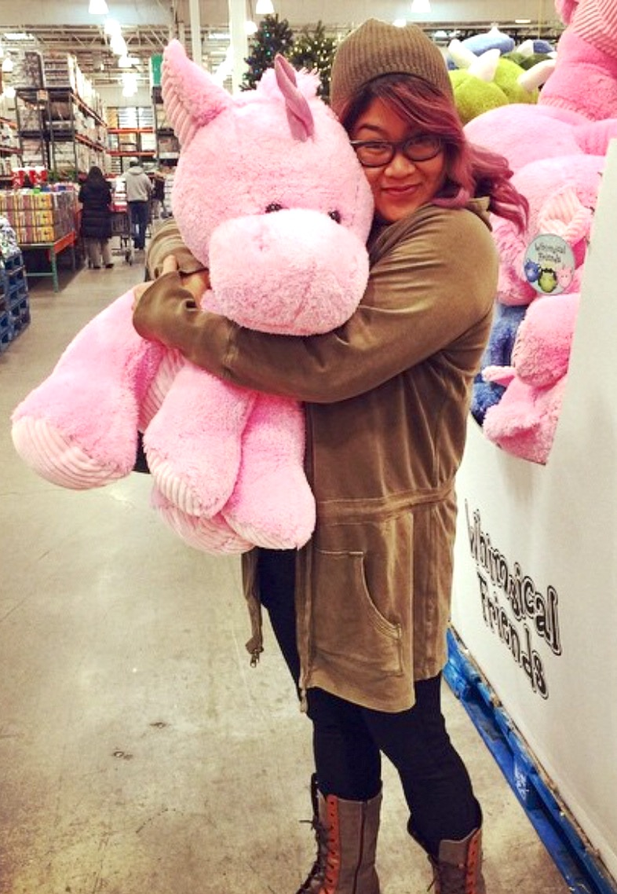

About Me

What's going on? My name is Rowena and I'm about to tell you a few things about myself. I was born and raised in New Jersey, but my parents are originally from the Philippines. I have one older sister, one older brother, and one younger brother. I have been told I show symptoms of suffering from middle child syndrome, but I like think that I'm just pretty awesome.
You know what else is awesome? Unicorns. Up until I was about 21 years of age, I truly believed unicorns not only existed and just were endangered species, but I also believed they held the secret to youth in their blood. I know this may seem silly to you, but I don't know, they're still awesome! Well to my surprise, turns out unicorns ARE real, according to NYTimes this past year. Unfortunately, they were not magical like I thought, but I will still bask in the fact that they once existed. Anyway, back to me. Currently, I am a New Jersey licensed Cosmetologist. I've been doing hair professionally for over 13 years and have conquered all areas in my field that I wanted you. Prior to doing hair, I was in college changing my major as if it was my job. I explored Graphic Design, Computer Information Systems, and Nursing. The only natural step was to go into Cosmetology next, right? Well...I did it...loved it...stuck to it...and now I'm done. I hope you enjoy my page because now I'm on to my next adventure-- to acquire super powers as a Web Developer!